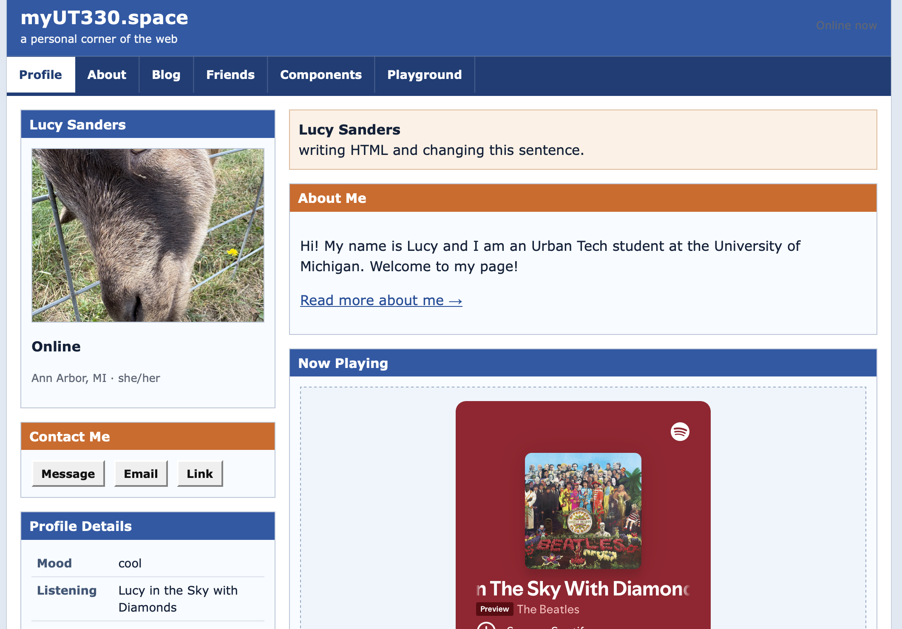

First Two Weeks of Class
· Week 2
In the first two weeks of class, we learned about interaction design, specifically in the digital context. Building our html and css skills, we created mock-websites to practice interaction design.
What I did
We built two websites using html, one being a fake "My Space" page representative of ourselves and our interests. We learned to embed pictures, music, and use components. Stylistically, though, we were limited to the resources we had. When we began to build this site, we were given more creative freedom and encouragement to be stylistic.
